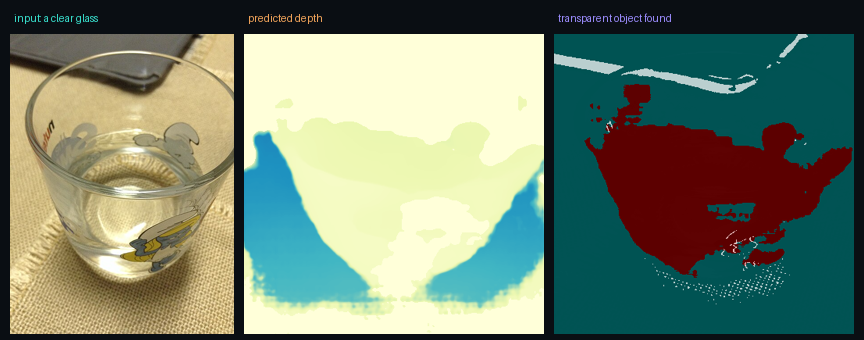

SparseDrive GPU · Colab L4
End-to-end self-driving from 6 cameras: detection, tracking, motion forecasts, and a planned “turn right” path — all from ~100 sparse tokens in a single forward pass.

MCTrack CPU · laptop
267 noisy, sometimes-missed detections plus clutter → 5 clean, ID-consistent 3D tracks at 30 FPS. Predict → associate → update, no GPU needed.

LightStereo GPU · Colab L4
Depth from two cameras a fixed gap apart: near road warm, far scene cool, the pedestrian and cars resolved as distinct distances — the disparity-to-depth law, live.

3D Gaussian Splatting GPU · Colab L4
The Mip-NeRF360 “garden”: ~185 photos → 5.2M optimised blobs → a smooth fly-through of viewpoints the camera never actually visited.

SeaSplat GPU · Colab L4
Un-watering a Curaçao reef: the murky blue-green input restored to true warm colours, with far structure that had vanished into the haze brought back.

Endo-2DTAM GPU · Colab L4
Dense 3D reconstruction of the inside of a colon from endoscope video (PSNR 23.5) — a live, consistent surgical map from nothing but a moving camera.

Vision-language spatial reasoning GPU · Colab L4
An open VLM grounding language in an image: “the right cat is closer — larger, more in focus.” The perception core the VLA methods are built on.

KUKA task-and-motion planning CPU · headless
A robot arm planning and executing a pick: sample a grasp → solve inverse kinematics → BiRRT a collision-free path. Every joint move is searched, not scripted.

NeuFlow-V2 optical flow GPU · Colab L4
Dense motion from two frames: the two walkers light up in different colours (they move differently) while the static hallway stays flat — the network segmenting by motion alone.

SIGMA multi-agent pathfinding CPU · Colab
32 robots threading a maze to their own goals — each deciding from only a local view via a learned policy, so the coordination emerges with no central controller.

MODEST — transparent-object perception CPU · Colab
From a single RGB photo of a clear glass, it estimates depth and segments the transparent object (red) — exactly the case where ordinary depth cameras fail, because the light passes straight through the glass and the sensor reads the table behind it.